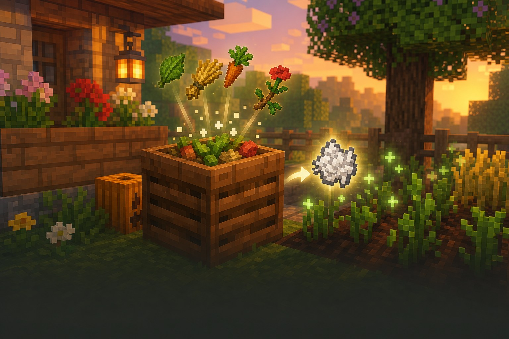
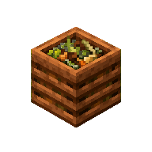

Корисне відкриття
База, що допомагає
Насіння не треба викидати.
Компостер перетворює рослинні залишки на кісткове борошно для швидкого росту.

Навіщо він потрібен?
Після ферми часто лишаються зайві насіння, листя й квіти. Замість сміття вони стають кістковим борошном, яке прискорює ріст рослин.
Три прості дії
Як користуватися компостером
1Візьми зайві рослиниНасіння, листя, квіти та врожай+
Тримай рослинний предмет у руці та натисни використання на компостері. Не всі предмети з ферми підходять однаково добре.
2Наповни компостерШар за шаром+
Кожен предмет може додати шар компосту. Продовжуй, поки компостер не заповниться.
3Забери кісткове борошноКоли верх стане світлим+
Натисни використання на повному компостері — отримаєш кісткове борошно. Воно допоможе виростити наступні рослини.
Компост: як це виглядає
насіння

Кістковеборошно
● Добриво прискорює ріст багатьох рослин.
Підказка мандрівникові
Важливо знати
Не кожен предмет спрацює
Компостер приймає рослинні речі, а не будь-який мотлох.
Наповнення не завжди миттєве
Один предмет може не додати шар — це нормально.
Корисний для жителя
Компостер може стати робочим місцем фермера.
Маленьке завдання
Спробуй за 5 хвилин
- Постав компостер біля своєї ферми.
- Збери зайве насіння або квіти.
- Наповни компостер і візьми кісткове борошно.
★ Бонус: прискор ріст пшениці кістковим борошном.